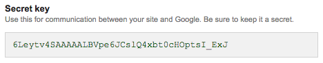

Introduction
Gusto is a powerful platform to manage recipes for food specific websites, that doesn't require any experience on web development, very easy to use and customize
- Item Name: Gusto - Recipe Management System
- Item Version: v 1.0
- Created: 20/09/2018
- Author: Marwa El-Manawy
- Support Questions: support@elmanawy.info
Hi there!
Thank you for buying my web application. Hope it will help to improve your business or impress your clients and it provides recipes for all users.
This documentation is to help you regarding each step of customization.
Thank You ..
About
Now, Lets get started to tell you about Gusto.
Gusto
s a powerful platform to manage recipes for food specific websites.
It comes with a plethora of features that make managing the system super easy.
Users can register accounts and create their own recipes or you can use the application to manage your own and share them with your friends.
The web application is a great way to build your website, very simple to install and customize and we offer great support, That don't require and experience on web development.
Take a look at this wonderful script and you will be impressed even more! Enjoy!
Don't hesitate to contact me if you have inquiry or suggestions, and support at:
support@elmanawy.info
Features
100% Responsive Design
Clean Coding
Easy Customization
Great Support
-
Security
- Totally secured system (SQL injection, XSS, CSRF)
- Built on powerful CodeIgniter Framework that has been tried and tested by millions of developers.
- Passwords are encrypted using PHPass library to make sure your data is safe.
-
User & Registration System
- Users can register for an account using the quick and easy register Popup.
- Login System comes with a Forgotten Password, to allow users to reset their password via email.
-
Recipe Builder
- Members / Admin add unlimited recipes.
- Add recipe category, descriptions, Ingredients , video, unlimited multi upload images, featured image, cooking time, people serves, and more .....
- SEO optimized for recipes using meta keywords and meta tags.
- Allow anyone to share recipe on social media (Facebook, twitter, google+, ..)
- Comments and react on it using Disqus.
-
Members
- Any register user can login/ forget password.
- Having awesome profile include member information and his recipes.
- Mange or update his information in profile settings (country, name, username, gender, user profile, ...).
- CRUD (Create, Read, Update, Delete) recipe with more details(featured image, multi upload unlimited images for recipes, description, video,Ingredients, an more amazing details.. ).
- Comment on other user recipes.
- Search on website with category or recipe name.
- Share recipe on social media (Facebook, twitter, google+, ..).
- See other other members profile.
- Can follow the new recipes added by register on website subscribe form.
- Read, share, and comment (with facebook plugin) on blog posts.
- Contact with support using contact form and contact information.
-
Admin Panel
- Flexible control panel system with full options.
- Only admin role can login admin panel.
- Change website settings(name, logo, favicon, timezone, site description,...).
- Change website SEO settings (meta keywords, meta description).
- Change Contact information (email, phone,...).
- Unlimited slides images related to the recipe.
- Change social media pages.
- Manage Members (Edit, Delete, Add and view member information) and change their member role (Regular member, admin).
- Manage recipe categories (add, edit, delete, view).
- Mange recipes (Add, Edit, Delete, and approve member recipe).
- Approve member recipes to appear on website.
- Can able/ disable recipe appearing.
- Mange topics (add, edit, delete, view).
- Admin can set topics as public/private/registered users.
- Manage ADS and select its location dynamically otherwise google ads or custom ads images on website.
- Can view/ delete users subscribed.
- Manage sliders that appears on website (add, edit, delete, view).
- Totally with this admin panel can manage and control every thing appear in website with full option.
- Google Anaytics tracking.
- Google Recaptcha.
- Admin can view/delete/export newsletters emails.
-
Trendy website interface included.
- Home page with
- Dynamic slider images.
- Widgets for popular recipes, popular authors, counter of pages of social media and simple search
- latest recipes added
- Ajax Subscribe form
- Single page for recipes category included its category and advanced search.
- Single awesome page for recipes included plethora details.
- User Profile included all details about author and his recipes.
- Tips and tricks page include admin posts
- single page for trip and trick.
- Contact form with recaptcha to make your client reach you easily.
- Login/ register/ forget password modal.
- Amazing Dashboard for register user include setting page, user recipes and page for managing recipe.
- Home page with
-
Other Features
- Easy to install and usability(without any coding knowledge needed).
- Awesome Design for Website and admin panel
- Fully Responsive for Website and admin panel
- Clean Code with hight performance.
- Easy Customization
- Friendly with SEO.
- High performance.
- More features will coming up.
System
- Backend Framework: Built on CodeIgniter
- Frontend Framework: Built on Bootstrap
- Requires PHP 5.6+
- Supports MySQL, Mysqli.
- Supports SMTP Email, PHP Mail()
Requirements
You will need the following softwares to customize this template.
2- Web Browser for testing (eg: Google Chrome or Mozilla Firefox)
3- FTP Tool to upload files to Server (eg: FileZilla)
Installation
Please read the documentation carefully to understand how this script is made and how to edit this properly and how you install script.This script based on bootstrap framework for design using ( HTML, CSS, Javascript, JQuery ), and script based on codeigniter framework using ( PHP, MySql ) language .
You just need to follow this steps to keep an eye on your new website:
1- Place files: You need to login your cPanel or whatever you're using to reach your server, Then upload the following folder content (root) to your public_html with your file manger or FTP.
you can also watch this if you find this difficult
2- Grap and upload database:
You can find the database file in (root) folder under the name of (database.sql), now you should visit your PHPmyadmin client on your dear server
Quick steps:
1- change your configuration data that located in application/config/database.php
2- You must setup email configration, Follow this path:
application/config/email.php here you can add you email data.
For translation Language
There is 2 languages English and Arabic you can choose your language from admin panel settings, You can edit the translations in this paths: application/language/english/.. or application/language/arabic/..

To integrate Disqus on your website.
-
Step 1: Follow this link to guide you how to install it.
https://help.disqus.com/installation/universal-embed-code
-
Step 2: after integrate you will get embeded code like the code in image below

-
Step 3: Then copy the Disqus username in this url and adding it in your admin panel setting in Disquss username field.
-
Step 4: Finally you will get this awesome comments form and reactions in your website.
Google Analytics:
1- go to https://analytics.google.com to create site2- go to admin area, Settings -> Google analytics Tracking ID and copy it Then paste it in your website admin panel.
4- Integrate Google Recaptcha
Step 1: Registering for Google reCAPTCHA here
Step 2: You will get the site key and secret key

Step 3: Adding the site key and secret key to google recaptch setting at admin panel.
Getting Start
You just need to follow this steps to keep an eye on your new website:
go to this link before you go on:
http://yourDomainName.com/admin

Type your admin username and password:
Email: admin@admin.com
Password: 123456
and follow those instructions
Modules
Here there we provide you for many modules:
- 1- Dashboard
In this modules there was summary for the main modules in script (eg. users, visitors, services, blog posts).
- 2- Users
This module for users who can login in backend to control The CMS, you can edit,add delete user.
- 3- Settings
This module for settings included seo tab has meta key words and meta description, contact tab included phone, address, whatsapp,...., and social media tab included facebook, twitter,....you can edit in this inputs.
- 4- sliders
This module for sliders that contain slides that appear on the home page site , you can edit,add delete slide.
- 5- Tricks and Trips
This module for Blog that contain Blog posts appear on your website , you can edit,add delete Post.
- 6- Icons
This module for Icons.
- 7- Categories
This module for Categories for your recipes , you can edit,add delete category.
- 7- Recipes
This module for recipes food , you can edit,add delete recipe.
you can add all about recipe
For example

Notice: You have to types of image the feature image that appear in each page and the other images that appear in recipe page
Admin can add the other images in one time and sort it - 8- Pages module
- 9- Newsletters Module
Change Log
1- Admin can set topics (Tips & Tricks) as Public, Private and registered users.
2- Adding tags option to Topic(Tips & Tricks).
3- Admin can export list of newsletters emails.
4- Recaptcha for contact us form.
Upgrade from Version 3.1 to 3.2
1- Run the queries provided to your database from phpMyAdmin.
ALTER TABLE `blog` ADD COLUMN `status` ENUM('0','1','2') DEFAULT '0' NULL AFTER `created`;
ALTER TABLE `blog` ADD COLUMN `tags` TEXT NULL AFTER `status`;
INSERT INTO `settings` (`key`) VALUES ('google_key');
INSERT INTO `settings` (`key`) VALUES ('google_secret_key');
2- Extract and upload source files to your server.
3- Update the database.php file located into "root/application/config/database.php"
4- Update the email.php file located into "root/application/config/email.php"
5- You are done.
1- Adding Google Analytics.
2- Fixed style issues in mobile.
New Features:
1- Translation Option, We adding (English and Arabic) Language.
2- Supported RTL, You can choose direction (RTL Or LTR)from admin panel to display the direction of website based on your language.
3- Created Pages module (Create unlimited page ex. about us, terms & condition, privacy,..).
4- adding disqus username from admin panel also you can control displaying comments.
5- Adding meta twitter and og.
Updated:
1- Remove meta keywords from table, It's not become useful for SEO.
2- Adding created time for newsletters.
3- Adding more social media and removing google plus.
4- Changing datatype of calories and serves.
5- Fixing design issue.
6- Adding Contact Email that received the contact us messages.
You need to Run this queries in phpmyadmin:
INSERT INTO `settings` (`key`, `value`) VALUES ('contact_form_email', '');
INSERT INTO `settings` (`key`, `value`) VALUES ('disqus_user', '');
INSERT INTO `settings` (`key`, `value`) VALUES ('direction', 'ltr');
INSERT INTO `settings` (`key`, `value`) VALUES ('twitter_image', '');
INSERT INTO `settings` (`key`, `value`) VALUES ('reddit', '');
INSERT INTO `settings` (`key`, `value`) VALUES ('flickr', '');
INSERT INTO `settings` (`key`, `value`) VALUES ('snapchat', '');
INSERT INTO `settings` (`key`, `value`) VALUES ('whatsapp', '');
DELETE FROM `settings` WHERE `key` = 'google_plus';
DELETE FROM `settings` WHERE `key` = 'meta_keywords';
ALTER TABLE `newsletters` ADD COLUMN `created` DATETIME NULL AFTER `email`;
ALTER TABLE `recipes` CHANGE `serves` `serves` VARCHAR(5) NOT NULL;
ALTER TABLE `recipes` CHANGE `calories` `calories` VARCHAR(5) NOT NULL;
ALTER TABLE `recipes` DROP COLUMN `meta_keywords`;
ALTER TABLE `recipes` DROP COLUMN `meta_keywords`;
ALTER TABLE `categories` DROP COLUMN `meta_keywords`;
ALTER TABLE `blog` DROP COLUMN `meta_keywords`;
CREATE TABLE `pages`( `page_id` INT NOT NULL AUTO_INCREMENT, `title` VARCHAR(300), `permalink` VARCHAR(300), `content` TEXT, PRIMARY KEY (`page_id`) );
1- New Feature: Custom Print Option for recipe.
1- Advertisements widgets for tricks page, single trick page and recipe page
Run queries in phpmyadmin
UPDATE `ad_locations` SET `name` = 'Home Side 1' WHERE `ad_location_id` = '5';
INSERT INTO `ad_locations` (`name`) VALUES ('Home Side 2');
UPDATE `ad_locations` SET `name` = 'Recipe Side 1' WHERE `ad_location_id` = '6';
INSERT INTO `ad_locations` (`name`) VALUES ('Recipe Side 2');
INSERT INTO `ad_locations` (`name`) VALUES ('Recipe Footer');
UPDATE `ad_locations` SET `name` = 'Trick Side 1' WHERE `ad_location_id` = '7';
INSERT INTO `ad_locations` (`name`) VALUES ('Trick Side 2');
INSERT INTO `ad_locations` (`name`) VALUES ('Trick Footer');
INSERT INTO `ad_locations` (`name`) VALUES ('Tricks Side 1');
INSERT INTO `ad_locations` (`name`) VALUES ('Tricks Side 2');
2- Latest tricks and most visited tricks widgets for trick page.
3- adding text editor for tricks module.
4- Using DISQUS to comment and react for trick post and recipe.
To integrate Disqus on your website follow this link explain the steps.
https://disqus.com/features/engage/
https://disqus.com/features/engage/
1- Delete Confirmation for each module records.
2- Dynamic SMTP User for forget password email.
make sure that webmaster email added in your contact info is the same SMTP user in this file application/config/email.php
1- Fixing Security Bug at ADS Module.
1- Fixing Bug at Ads.
1- Update UX for home page.
2- Add advanced search for home page.
1- Email Template for forget password.
1- SSL Supported(Check the URL in your database).
1- Pagination in admin panel modules.
2- Filter for appearance table of users that having 2 pages for admins and normal users in admin panel.
3- Admin/ normal user can set their email appear in their profile.
Run this Query in your phpMyadmin
ALTER TABLE `users`
ADD COLUMN `email_appear` TINYINT(1) NULL;
1- Initial Version
Support
- If you have any questions feel free to contact us at support@elmanawy.info
- If you need any modifications just contact support at support@elmanawy.info
Reach US:
Best Regards, Marwa El-Manawy